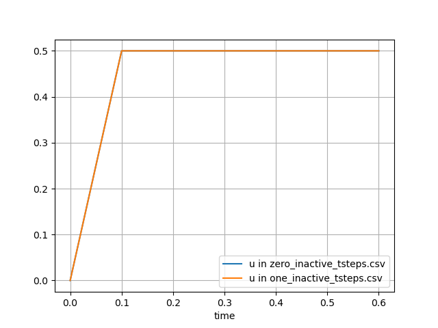
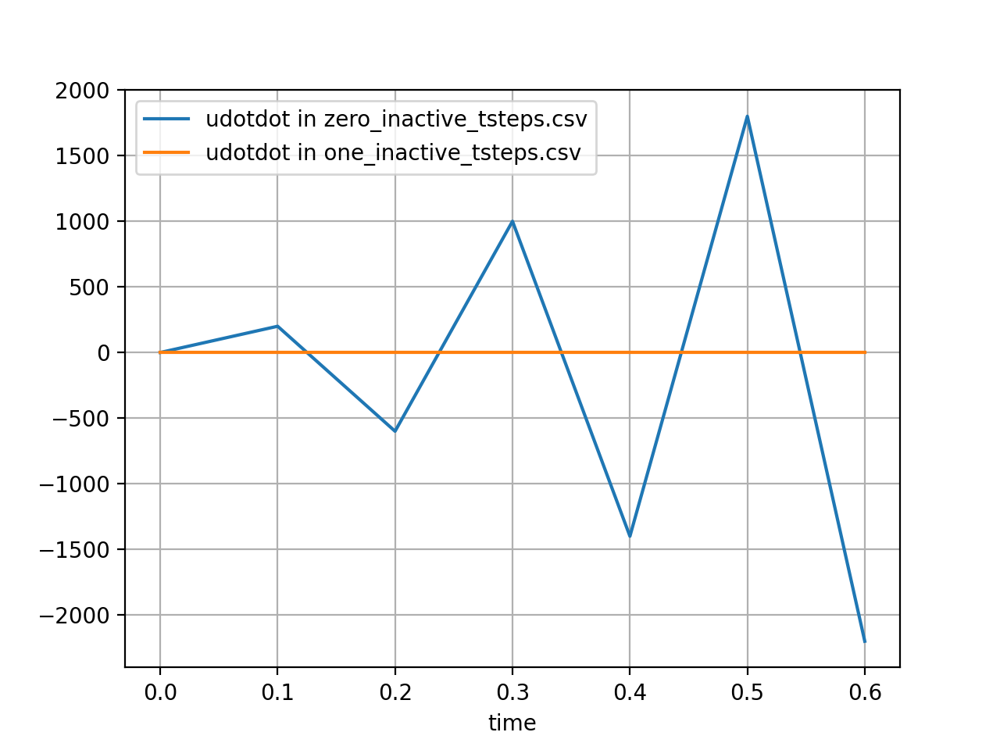

- beta0.25beta value
Default:0.25
C++ Type:double
Controllable:No
Description:beta value
- gamma0.5gamma value
Default:0.5
C++ Type:double
Controllable:No
Description:gamma value
- inactive_tsteps0The time derivatives will set to be zero for this number of time steps.
Default:0
C++ Type:int
Controllable:No
Description:The time derivatives will set to be zero for this number of time steps.
NewmarkBeta
Computes the first and second time derivative of variable using Newmark-Beta method.
Description
Newmark time integration (Newmark, 1959) is one of the commonly used time integration methods in structural dynamics problems. In this method, the second () and first () time derivatives of a variable at are written in terms of the , and at time , and at as shown below:
In the above equations, and are Newmark time integration parameters.
For and , the Newmark time integration method is implicit, unconditionally stable and second order accurate in time. This is the constant average acceleration method with no numerical damping.
and results in the linear acceleration method where the acceleration is linearly varying between and . This method is also implicit, unconditionally stable and second order accurate in time. However, there is a small numerical damping when the linear acceleration method is used.
For , the method is second order accurate and it is unconditionally stable for .
When using the constant average acceleration method that has no numerical damping, high frequency noise can sometimes be observed in the velocity and acceleration time histories for a problem with prescribed displacement (Bathe and Noh, 2012). Using other parameters for and results in non-zero numerical damping that damps out part of the high frequency noise but not all of it. Hilber-Hughes-Taylor (HHT) time integration is a variation of the Newmark method that damps out high frequency noise especially in structural dynamics problems. More details about this Newmark and HHT time integration schemes can be found in these lecture notes. HHT time integration requires modification to the equation of motion and is currently implemented only for structural dynamics problems in solid mechanics module.
When using Newmark time integration in structural dynamics problems that require an initial static step (most commonly for gravity analysis), a convenient method in MOOSE is to disable the inertia kernels (which can be done using the controls system), the velocity and acceleration calculations, and the stiffness damping (which can be done by setting static_initialization=true in the stressdivergence kernels) during the first time step. This leads to solving the equation, Ku = F, in the first time step, which essentially initializes displacements and stresses from gravity loading. When using the Newmark-Beta time integrator (which we most often use for dynamics) or any other time integrator, we cannot switch off time derivatives (velocity and acceleration) calculations through the control system. Therefore, the time integrator will compute velocity and acceleration for the static step. When using the Newmark-Beta time integration for this purpose, this will result in noisy acceleration and velocity responses in the whole simulation. Such spurious responses can be avoided by using the inactive_tsteps parameter. This parameter ensures that the NewmarkBeta time integrator returns zero derivatives for the first few time steps and starting the acceleration and velocity calculations after that. The time derivative calculations are started when the time step number is greater than inactive_tsteps.
A sample result of using this parameter is shown in Figure 1, Figure 2, and Figure 3 below. The result corresponds to the time derivative of a ramp function, which is typically the displacement response under gravity. The velocities and accelerations calculated for this function without using the inactive_tsteps parameter (blue) and using inactive_tsteps=1 (orange) are shown. The input syntax used to generate the orange plots below is listed after the figures below.

Figure 1: Displacement

Figure 2: Velocity

Figure 3: Acceleration
[Executioner]
type = Transient
start_time = 0.0
num_steps = 6
dt = 0.1
[TimeIntegrator]
type = NewmarkBeta
inactive_tsteps = 1
[]
[]
Input Parameters
- control_tagsAdds user-defined labels for accessing object parameters via control logic.
C++ Type:std::vector<std::string>
Controllable:No
Description:Adds user-defined labels for accessing object parameters via control logic.
- enableTrueSet the enabled status of the MooseObject.
Default:True
C++ Type:bool
Controllable:No
Description:Set the enabled status of the MooseObject.